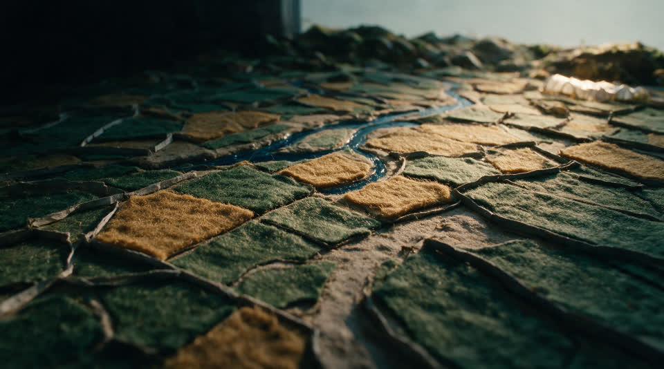
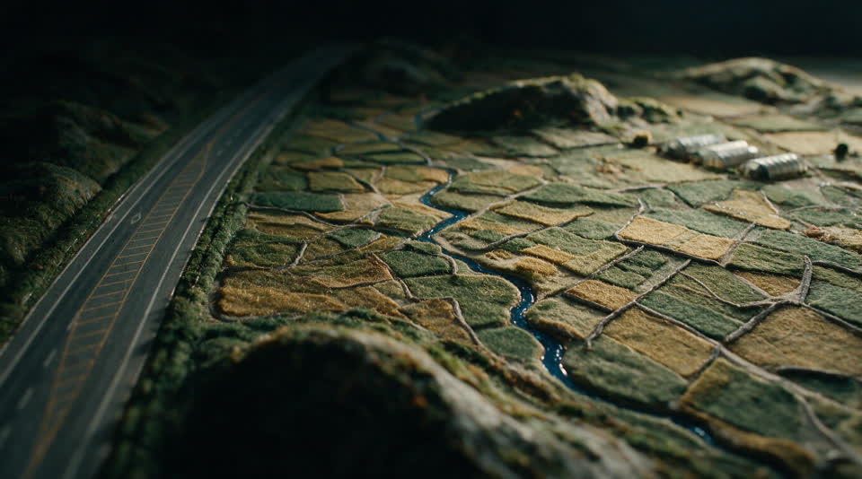
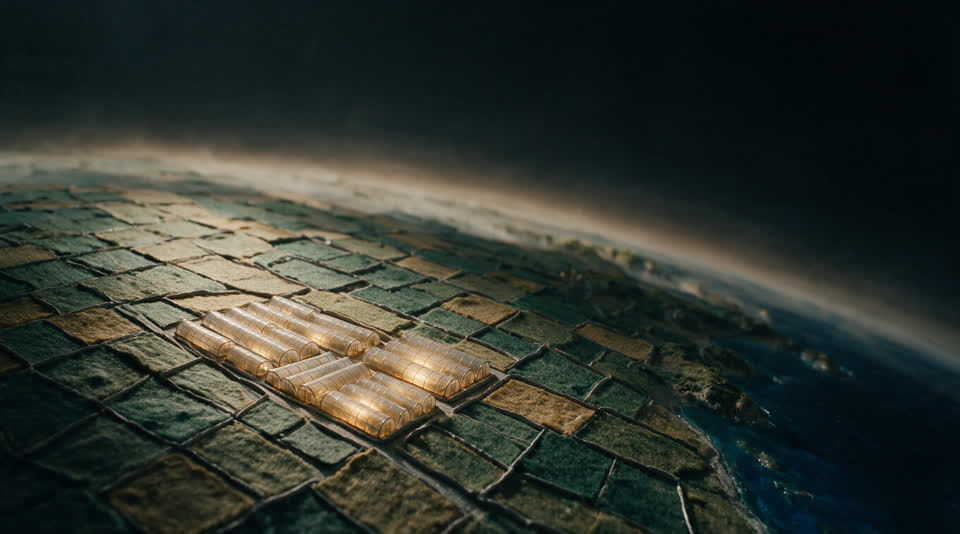
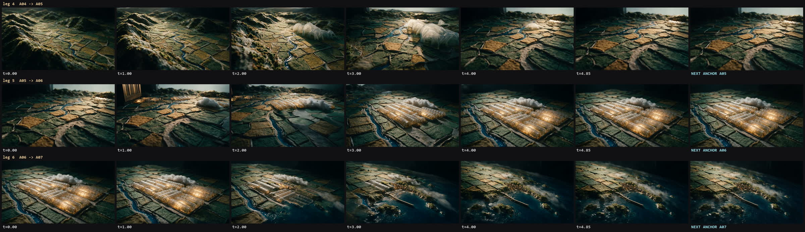
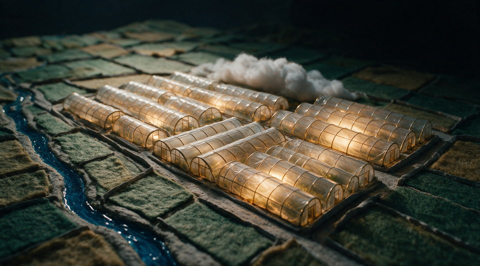
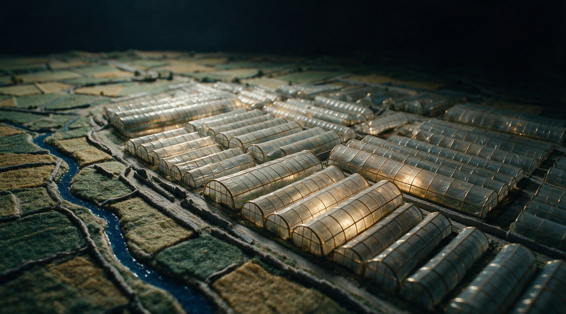
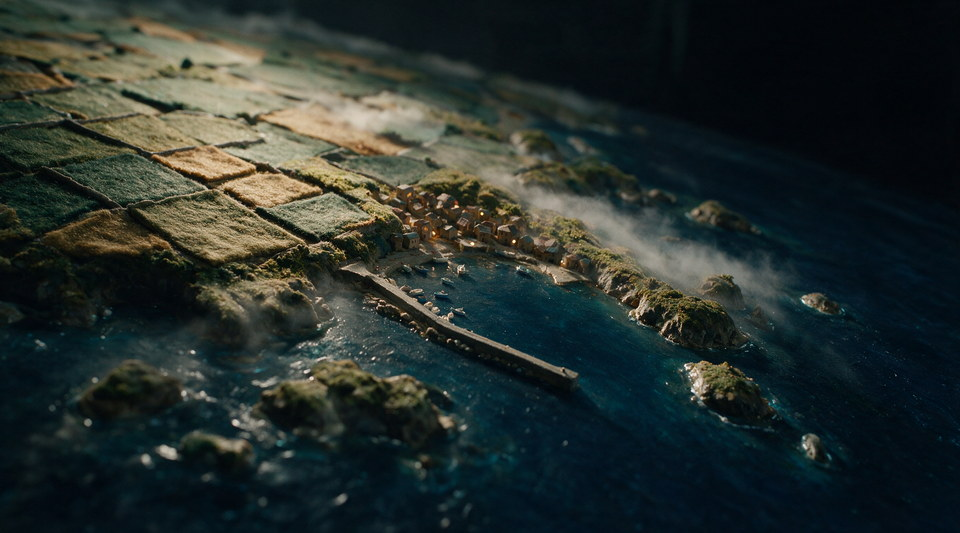

이 페이지 하나만 보시면 됩니다. "결정 필요"의 번호로 답해 주세요(예: "D1 재생성, D2 OK"). 화면 링크는 전부 이 사이트(GitHub Pages) 안입니다. 캔버스·선택 페이지도 여기서만 링크합니다.




선택을 누르거나 "D3 S3"처럼 답해 주세요.


| 항목 | 결정 |
|---|---|
| 글꼴 · 톤 | Paperlogy + Pretendard · T3(잉크 + 블루 액센트·틴트) — 시스템 전체에 적용 중(폰트 페이지에서 고르신 조합) |
| 대시보드 골격 | B5 지도 그리드(좌 백본+한반도 0.25° 셀 지도, 우 탭 패널 3종) — 구현 완료 |
| 데이터 관리 골격 | Roboflow 격자 + B2 탭·드로어, 아카이브 표시 → 지도 레이어 — 구현 완료 |
| 로그인 | 좌 실제 폼 / 우 디오라마 영상(인셋, 캡션 없음) + 실제 Land-XI·LX CI — 완료 |
| 필름 구조 | 12 leg → 지구본 이동 구간에 중간 앵커(6b, 이후 8b)로 13–14 leg |
| 생성 규칙 | 1회 생성 원칙, 프롬프트 사전 공개, 앵커 → 확인 → 영상 |
| 화면 | 주소 | 상태 | 메모 |
|---|---|---|---|
| 메인(스크럽 필름) | /landxi/proto/scrub/index.html | 신형 | Leg 1–6 AI(4–6은 재생성 예정) + 임시 7 + 여수 핸드오프 + 브랜드 마감. 루트 /Main/도 여기로 |
| 로그인 | /landxi/proto/login.html | 신형 | 실제 CI · 영상 인셋 · 글자 정리 완료. 이미 로그인 상태면 ?logout을 붙여 보세요 |
| 관리자 대시보드 | /landxi/proto/dashboard.html | 신형 | B5 지도 그리드 원판대로 재구현 완료(우측 탭 패널 포함). 구형이 보이면 Ctrl+F5 |
| 데이터 관리 | /landxi/proto/dataset.html | 신형 | 아카이브 탭 → 타일 표시 → 우측 지도 판에 레이어 |
| 프로젝트 | — | 원판 8장 완료 | D5 OK 후 구현 |
| XI맵 · 분석 실행 · 카드 발행 · 서비스 지원/관리 · MY | — | 미착수 | 프로젝트 다음 순서 |
| 자료 | 주소 |
|---|---|
| 타임라인(레그별 영상 재생·시간) | /landxi/proto/film/timeline.html |
| 앵커 갤러리 13장(프롬프트 포함) | /landxi/proto/film/anchors.html |
| Leg 1–3 rev3 검수 시트 | 이미지 |
| Leg 4–6 1차 검수 시트 | 이미지 |
| 앵커 A06/A07 재생성 시트 | 이미지 |
| 앵커 A05/A06b 시트 | 이미지 |
| 페이지 | 주소 | 용도 |
|---|---|---|
| 폰트 · 톤 후보 36종 | /landxi/proto/fonts.html | 결정됨(Paperlogy + Pretendard · T3) — 참고용 |
| 표·차트 스타일 6종 | /landxi/proto/charts.html | D3 |
| 디자인 캔버스(원판 전부) | claude.ai 아티팩트 | B5 대시보드·데이터 관리·로그인·프로젝트 4장 (D4) |
| GitHub 저장소 | plan1-foundation | 10분마다 자동 배포 |
이 허브는 진행에 맞춰 갱신됩니다. 새 검토 요청은 항상 여기 "결정 필요"에 번호로 추가합니다.
{kind=link}
{kind=link}
{kind=link}
{kind=link}